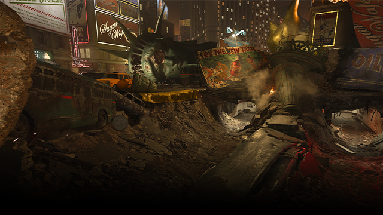
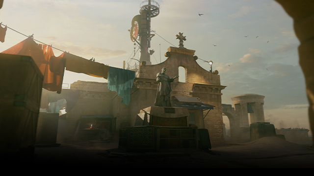

Season Five of Call of Duty®: Vanguard is interrupted by some of the most notorious villains the AO has ever seen.
Villains of Call of Duty® past have infiltrated the ranks, as Raul Menendez, Khaled Al-Asad, Gabriel T. Rorke, and He ‘Seraph’ Zhen-Zhen look to avenge their fallen comrades.
With two new city-inspired maps and the newest chapter in Round-Based Zombies, sometimes it is good to be this bad.
Players will experience influential battles of World War II as they fight for victory across the Eastern and Western Fronts of Europe, the Pacific, and North Africa
NEW MAPS:

6V6
BEHEADED

6V6, 8V8, 12V12, 14V14
FORTRESS